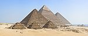
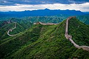
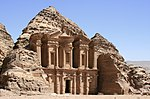
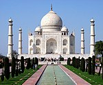

The New 7 Wonders of the World was a campaign started in 2001 to choose Wonders of the World from a selection of 200 existing monuments.The 7 winners were chosen from 21 candidates, which had been whittled down from 77 choices by a panel in 2006.
The New 7 Wonders Foundation, established in 2001, relied on private donations and the sale of broadcast rights and received no public funding.[9] After the final announcement, New 7 Wonders said it did not earn anything from the exercise and barely recovered its investment.[10] Although N7W describes itself as a not-for-profit organization, the company behind it—the New Open World Corporation (NOWC)—is a commercial business. All licensing and sponsorship money is paid to NOWC.
The Great Pyramid of Giza, largest and oldest of the three pyramids at the Giza Necropolis in Egypt and the only surviving of the original Seven Wonders of the Ancient World, was granted honorary status.
| Wonder | Location | Image |
|---|---|---|
| Giza Pyramids | Giza Necropolis, Egypt |  |
| Great Wall of China | China |  |
| Petra | Ma'an, Jordan |  |
| Taj Mahal | Agra, India |  |